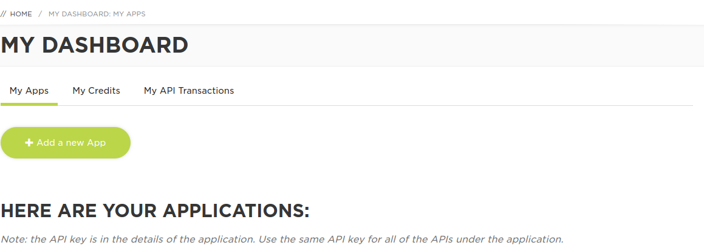
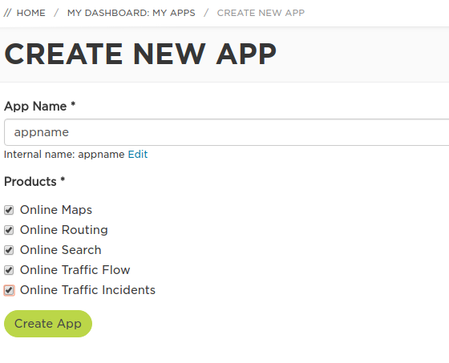
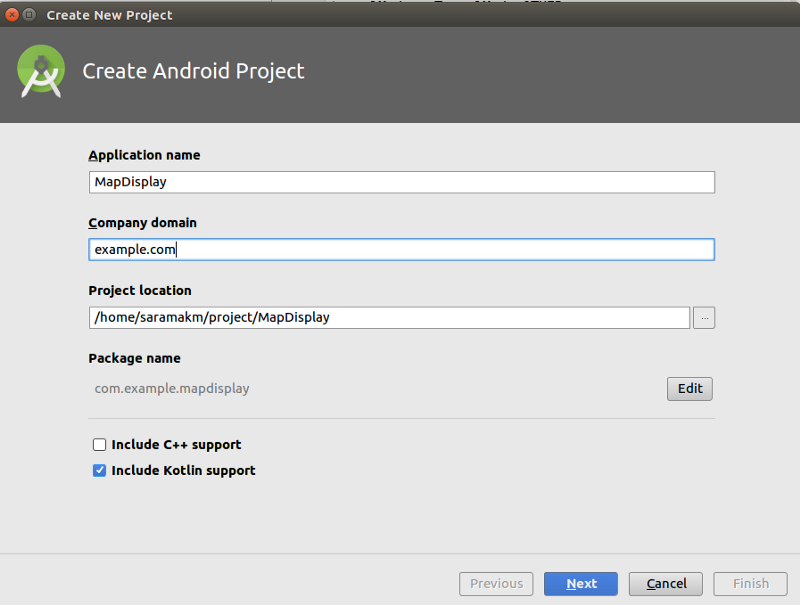
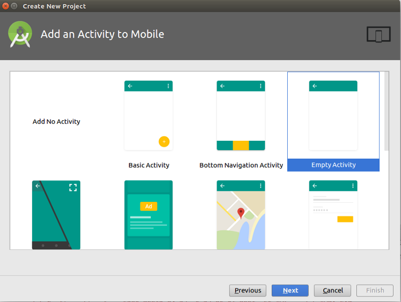

Maps SDK for Android is a convenient Software Development Kit that helps you developers make the most out of the TomTom Online Services in your mobile application, without the complexity of bare REST API calls. Optimized for Android applications, the Maps SDK for Android allows you to easily configure and deploy different location services inside of your Android application. Maps SDK for Android comes as modules so that you can use just the features you need:
Online Maps – display and interact with beautiful maps in your application using vector tiles, raster tiles, visualize traffic incidents and/or traffic flow on top of a map
Online Search – search for an address, for a Point of Interest or a combination of both. Includes auto-completion and correction for the best user experience
Online Routing – use the industry’s leading routing engine to calculate routes with advanced parameters such as traffic avoidance, eco routes, waypoint optimization, reachable range, time to leave, etc.
Maps SDK for Android comes with the documentation and examples for the key features of map, search and routing as well as real code samples in Maps SDK Examples app. Use this source code in your own app to speed up development and get to market faster!
What you’ll need
Android Studio
JDK - Java Developer Kid
Get your api key from developer.tomtom.com
Go to developer.tomtom.com and register. Log in and go to your dashboard.  Press add a new App, choose a name and select product which you will use 
Request an evaluation API key to access the underlying services
On your dashboard is a new app, please select the app to expand product and check key. The most important is Customer API Key ( 2500 request/per day are for free) This key is needed for sdk please copy this key to clipboard because it is needed in next steps. Now you are ready to create a new application and display a map.
Android studio
Run android studio and start new project  Create new android project — kotlin support
Empty activity — with default names for layout and activity
 add to root/build.gradle a maven tomtom repository.